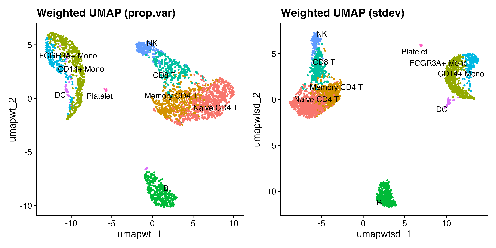

Variance-Weighted UMAP with wUMAP
wUMAP.RmdOverview
Standard UMAP treats every principal component (PC) equally. In scRNA-seq, early PCs capture far more biological variation than later ones — yet a standard UMAP over PCs 1–50 weights PC 50 the same as PC 1.
wUMAP scales each PC axis by a weight derived from its variance contribution before handing the embedding to UMAP, so biologically informative PCs dominate cell distances in the final layout.
Data
We use the classic PBMC 3k dataset from SeuratData,
which includes PCA, cell-type annotations, and standard clustering
already applied.
data(pbmc3k.final)
pbmc <- UpdateSeuratObject(pbmc3k.final)
Idents(pbmc) <- "seurat_annotations"Standard vs weighted UMAP
RunWeightedUMAP() is a drop-in replacement for
RunUMAP(). Setting weight.by = "none"
reproduces the standard result; weight.by = "prop.var" (the
default) scales each PC by its proportion of explained variance.
set.seed(42)
pbmc <- RunWeightedUMAP(pbmc, dims = 1:50, weight.by = "none",
reduction.name = "umap.std", verbose = FALSE)
pbmc <- RunWeightedUMAP(pbmc, dims = 1:50, weight.by = "prop.var",
reduction.name = "umap.wt", verbose = FALSE)
p1 <- DimPlot(pbmc, reduction = "umap.std", label = TRUE, repel = TRUE) +
ggtitle("Standard UMAP") + NoLegend()
p2 <- DimPlot(pbmc, reduction = "umap.wt", label = TRUE, repel = TRUE) +
ggtitle("Weighted UMAP (prop.var)") + NoLegend()
p1 | p2
Left: standard UMAP. Right: variance-weighted UMAP.
Weighting schemes
Three schemes are available via weight.by:
| Value | Weight formula | Effect |
|---|---|---|
"prop.var" |
Early PCs strongly dominate | |
"stdev" |
Gentler emphasis on early PCs | |
"none" |
Standard UMAP |
pbmc <- RunWeightedUMAP(pbmc, dims = 1:50, weight.by = "stdev",
reduction.name = "umap.wt.sd", verbose = FALSE)
p3 <- DimPlot(pbmc, reduction = "umap.wt.sd", label = TRUE, repel = TRUE) +
ggtitle("Weighted UMAP (stdev)") + NoLegend()
p2 | p3
Proportional-variance vs standard-deviation weighting.
Blending with weight.factor
weight.factor (0–1) continuously blends between the
unweighted (0) and fully weighted (1)
embedding:
pbmc <- RunWeightedUMAP(pbmc, dims = 1:50, weight.by = "prop.var",
weight.factor = 0.25, reduction.name = "umap.wf25",
verbose = FALSE)
pbmc <- RunWeightedUMAP(pbmc, dims = 1:50, weight.by = "prop.var",
weight.factor = 0.75, reduction.name = "umap.wf75",
verbose = FALSE)
pa <- DimPlot(pbmc, reduction = "umap.std", label = TRUE, repel = TRUE) +
ggtitle("weight.factor = 0") + NoLegend()
pb <- DimPlot(pbmc, reduction = "umap.wf25", label = TRUE, repel = TRUE) +
ggtitle("weight.factor = 0.25") + NoLegend()
pc <- DimPlot(pbmc, reduction = "umap.wf75", label = TRUE, repel = TRUE) +
ggtitle("weight.factor = 0.75") + NoLegend()
pd <- DimPlot(pbmc, reduction = "umap.wt", label = TRUE, repel = TRUE) +
ggtitle("weight.factor = 1") + NoLegend()
(pa | pb) / (pc | pd)
weight.factor controls the blend between standard and fully weighted.
Log-scale weights
For datasets where PC 1 explains dramatically more variance than all
others, log.scale = TRUE first applies log1p()
to the weights before normalising. This compresses the dynamic range so
intermediate PCs still contribute to the layout.
pbmc <- RunWeightedUMAP(pbmc, dims = 1:50, weight.by = "prop.var",
log.scale = TRUE, reduction.name = "umap.log",
verbose = FALSE)
DimPlot(pbmc, reduction = "umap.std", label = TRUE, repel = TRUE) + ggtitle("Standard") + NoLegend() |
DimPlot(pbmc, reduction = "umap.wt", label = TRUE, repel = TRUE) + ggtitle("prop.var") + NoLegend() |
DimPlot(pbmc, reduction = "umap.log", label = TRUE, repel = TRUE) + ggtitle("prop.var + log.scale") + NoLegend()
Standard (left), fully weighted (centre), log-scaled weights (right).
Consistent clustering and UMAP with
RunWeightedNeighbors()
A common pitfall: clustering on one KNN graph while visualising on
another. RunWeightedNeighbors() stores the weighted
embedding and builds both the KNN and SNN graphs in one step, so
clustering and UMAP share exactly the same nearest-neighbour
structure.
pbmc <- RunWeightedNeighbors(pbmc, dims = 1:50, weight.by = "prop.var",
prefix = "wt", verbose = FALSE)
pbmc <- FindClusters(pbmc, graph.name = "wt_snn", resolution = 0.5,
verbose = FALSE)
pbmc <- RunWeightedUMAP(pbmc, graph = "wt_nn", reduction.name = "umap.consistent",
verbose = FALSE)
DimPlot(pbmc, reduction = "umap.consistent", label = TRUE, repel = TRUE) +
ggtitle("Consistent weighted clustering + UMAP") + NoLegend()
Clustering and UMAP both derived from the same weighted KNN graph.